Home Lab Revamp
Dibuat di Surga
Aku memutuskan untuk merombak setup home-lab ku. Kenapa? Karena ada banyak conflict antara service yang berjalan. Aku mencoba memasang Pi-Hole untuk eksperimen DNS dan Ad-Blocker tapi ternyata itu conflict dengan Apache Web Server. Aku tidak mau mematikan Apache karena FreshRSS, Nextcloud berjalan di atas itu.
Alasan yang kedua adalah aku ingin melakukan ekspansi untuk storage. Thinkpad X260 serverku sekarang memiliki “hanya” 128 GB. Aku berencana untuk membuat SMB dan memindahkan banyak film dari PC-ku (sekitar 87.7 GB, 56 film) untuk ditonton dengan streaming via Jellyfin. Kenapa engga streaming pakai website biasa aja? Jawabannya karena ada risiko bakal patah-patah. Aku juga berencana melakukan banyak hal seperti mendownload otomatis film via torrent ke serverku jadi aku tidak perlu menyalakan PC-ku dan menunggu proses download selesai.
Post ini adalah bentuk dari dokumentasi dalam proses perombakan ini.
X260
Mari kenalan dulu sama lappy yang bakal kuoprek. Dia akan kuberi nama, “RENNER” yang artinya pelari (dari bahasa Jerman) dan nama itu bersifat palindrom (dibaca dibalik tetap RENNER). Dia adalah Thinkpad X260 yang kubeli 27 Desember 2021. Waktu itu aku ada di kampung halaman, cuma punya PC dan PC-ku ada di kota aku kuliah😢. Karena mati bosan aku memutuskan untuk membeli laptop yang “murah”. Berikut penampakan si doi.
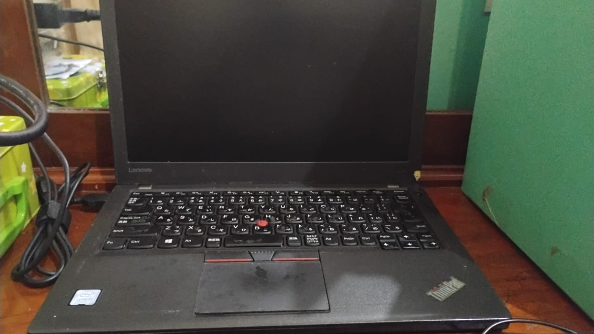
Sejarah X260
Sedikit flashback, Aku kurang puas dengan layout keyboard Jepang-nya. Jadi aku beli lagi keyboard khusus untuk layout US, tapi karena aku terlalu tengil jadi keycap untuk backspace jadi lepas dan aku engga tahu cara benerinnya.
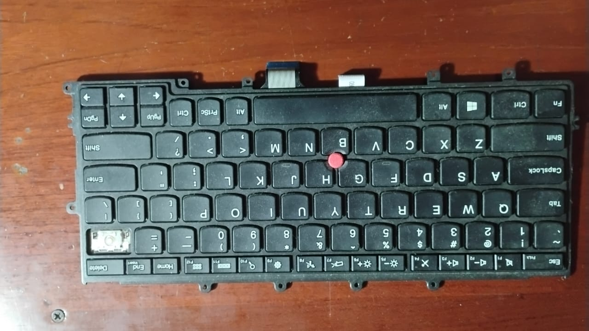
Setelah beberapa bulan beli, aku kembali kuliah dan laptop ini jadi tidak terpakai. Aku memutuskan untuk meminjamkannya ke sahabatku. Setelah dipakai beberapa semester, laptopnya rusak…keyboard-nya ngetik sendiri sama ada beberapa keys yang tidak berfungsi. Sudah tertekan tetapi dia tidak mau merespon. Sahabatku beli laptop baru dan kembaliin si RENNER.
Aku kira aku masih bisa pakai RENNER sebagai laptop (bisa dibawa ke warkop). Tapi setelah aku coba ganti keyboard ke Jepang lagi ternyata masalahnya di konektor😫. Bisa sih pakai keyboard eksternal tapi yang aku ga suka itu ghost click nya, tiba-tiba bisa ngespam YYYYYYYYYYYYYYYYYYYYYYYYYY tiada aliran elektron tiada tekanan jari manusia.
Kondisi
I/O keyboard ini cukup lengkap, di bagian kanan ada
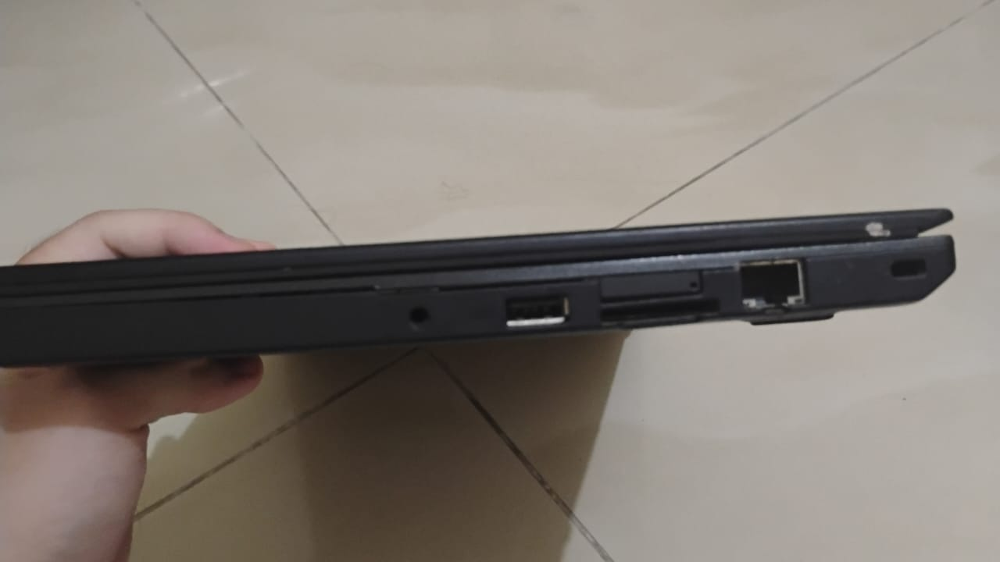
- Audio combo jack
- USB A 3.0 (support Always on)
- SD Card Reader
- Port RJ45
- Kensington Lock
- Slot SIM card (aku cukup takjub dengan adanya ini, soalnya ini cuma ada di laptop kelas bisnis)
Di bagian kiri ada
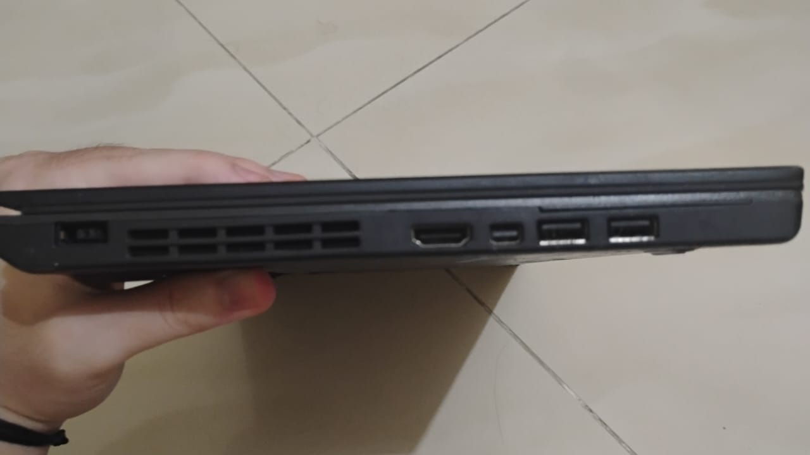
- DC jack
- HDMI port
- Mini Display Port
- 2 USB A 3.0
Namun sayangnya ada sedikit masalah di skrup bagian kanannya. Skrupnya tidak mampu melekatkan bodi atas dan bawah sehingga ada sedikit celah seperti ini

RENNER masih bisa nyala dan bisa kugunakan sebagai bahan homelab, aku bersyukur untuk itu.
Ini adalah spesifikasi hardware singkat dari RENNER

Sedikit tambahan kalau RENNER sebenarnya punya slot M.2 SATA tapi engga kepake dan untuk booting dia pakai SSD SATA 2.5 inch 128 GB.
Memilih OS
Sebelumnya, aku menggunakan Lubuntu 24 untuk OS homelab ku. Saat itu aku belum tahu tentang Proxmox. Sebuah OS yang memungkinkan virtualisasi VM dan Container. Dengan Proxmox aku tidak perlu takut dengan terjadinya conflict seperti yang aku ceritakan sebelumnya. Aku kenal Proxmox dari video ini. Saatnya kita mulai instalasi
- Aku kunjungi situs resminya dan memilih Proxmox VE (Virtual Environment) untuk di-download. Pada waktu aku menulis ini, aku sedang menunggu prosesnya selesai.
- Ambil flashdisk engga kepake trus buat jadi bootable USB dengan ISO yang baru di-download. Di sini aku pakai Rufus 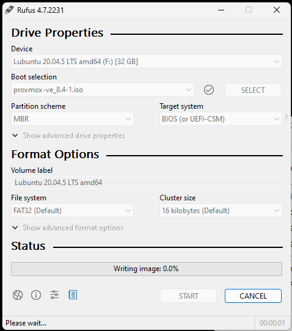
Aku kaget karena aku dapet warning kalau bakal pakai DD image (aku engga tahu apa itu, dan rasanya sejauh ini aku buat Bootable USB) engga pernah pakai itu
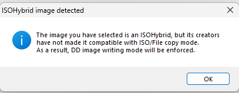
Setelah kucari ternyata ini bedanya Oke…dan pas aku klik ternyata aku engga bisa akses USB-nya dan USB-nya jadi 2 partisi
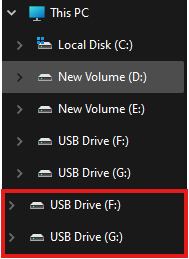
Dan aku juga engga bisa akses F: dan G: (kedua partisi USB itu) 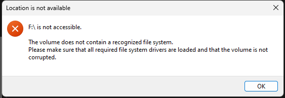
Jawabannya juga ada di sini
But this can also be one of the drawbacks, as it means you will usually find that you cannot access the content of your USB any longer after it has been created. Itu menjelaskan kenapa.
- Sekarang aku perlu colok aja USB ini ke RENNER dan install Proxmox-nya. Aku udah lihat video tutorial ini dan kelihatannya tidak begitu buruk.
Proxmox Setup
Jadi langsung saja aku masuk ke boot option dan memilih flashdisk untuk di-boot
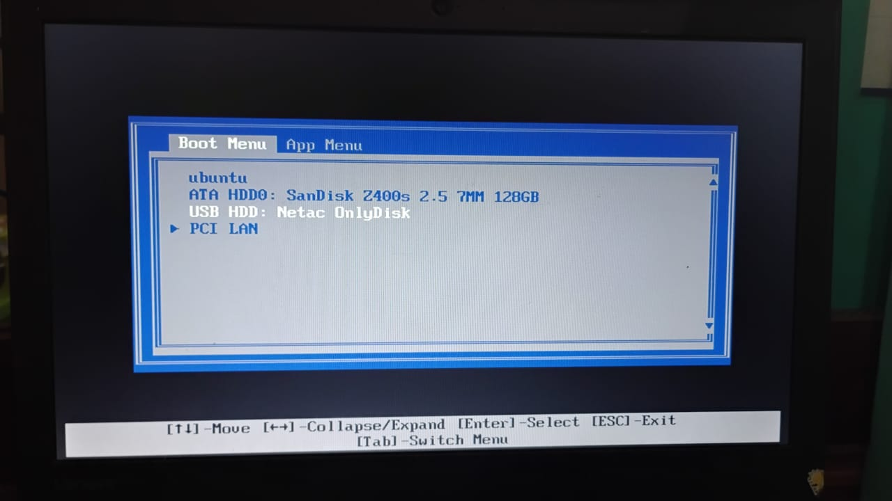
Lalu aku disuguhkan Welcome Screen yang langsung kupilih graphical installation
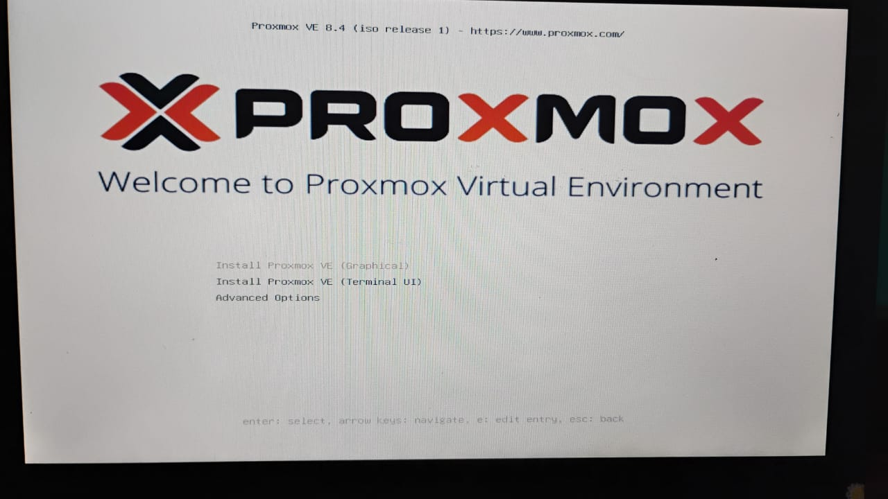
Seperti instalasi software lainnya aku juga disuguhkan EULA
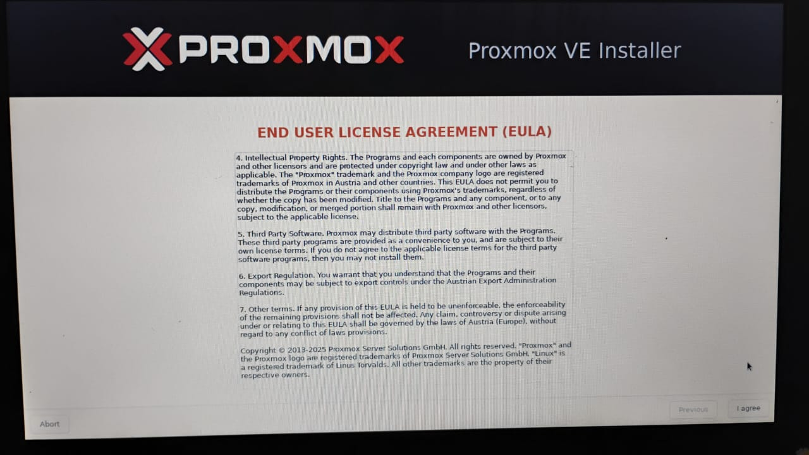
Setelah itu aku diminta untuk memilih harddisk instalasi dan aku melihat tombol options
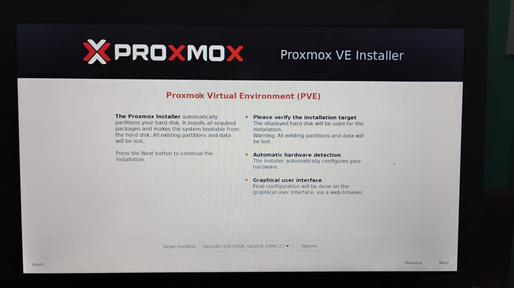
Oke di menu ini ada beberapa size yang bisa kita tentukan, penjelasan dari hdsize, minroot, swapsize, minfree, dan maxvz dapat ditemukan di sini
Kurang lebih artinya begini
- hdsize: ukuran dari harddisk yang ingin digunakan untuk semua partisi
- swapsize: kapasitas memori swap (virtual memory) untuk partisi ini
- minroot: ukuran dari partisi OS
- minfree: ukuran dari harddisk yang tidak boleh digunakan
- maxvz: ukuran untuk disk VM, dan kawan-kawan
Aku biarkan kosong saja
Lalu aku ditunjukkan halaman untuk konfigurasi jaringan
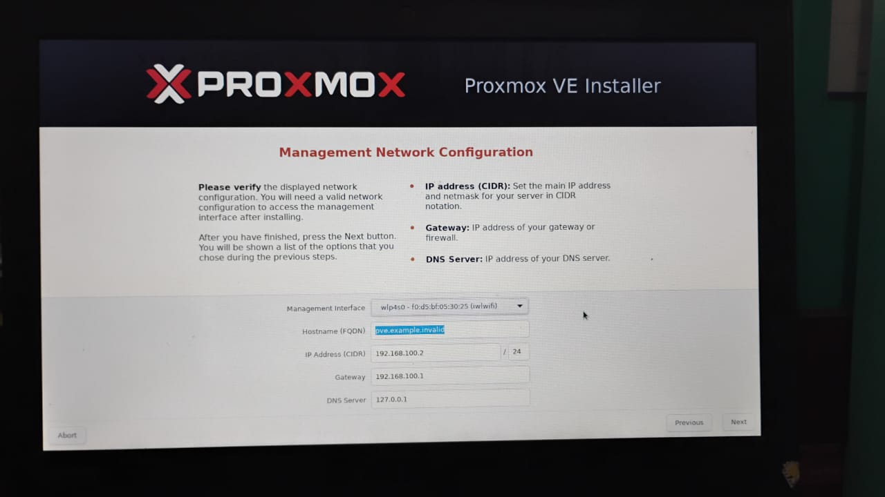
Aku coba cari-cari tentang apa itu hostname, ternyata bisa aku awur, yang penting masuk saja. Berikut adalah konfigurasiku
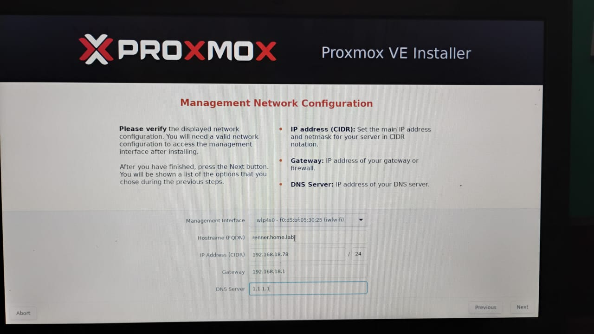
Akhirnya aku ditunjukkan ringkasan tentang Proxmox yang kubuat dan ini hasilnya
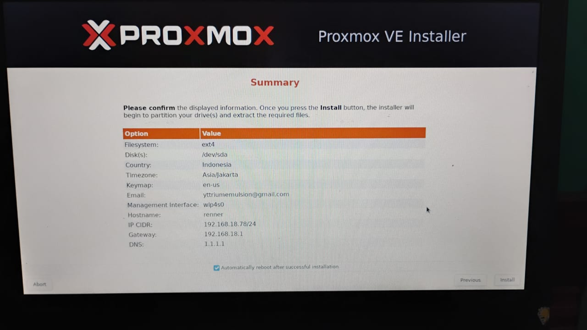
Dan setelah reboot, aku bisa login. Dan seharusnya aku bisa akses Proxmox dari IP address port 8006
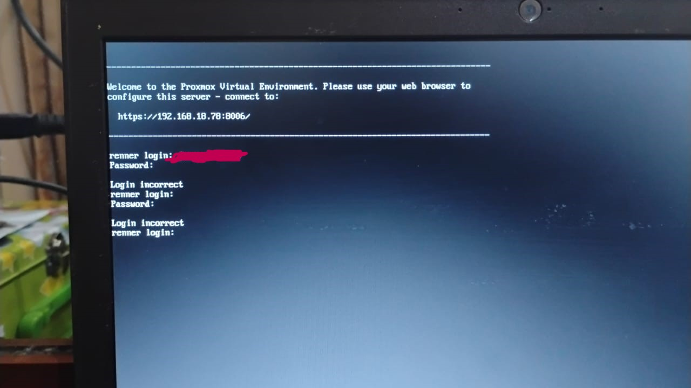
Dan saat kucoba akses 192.168.18.78:8006, lihat apa yang terjadi

Saat aku coba ping juga tidak dapat sampai
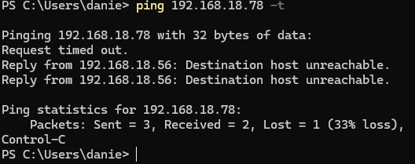
Lalu aku sadar…aku belum menghubungkannya ke Wi-Fi, bruh. Setelah aku mencari-cari aku menemukan situs ini dan aku langsung edit /etc/network/interfaces dengan menambahkan wpa-essid dan wpa-psk menjadi seperti ini
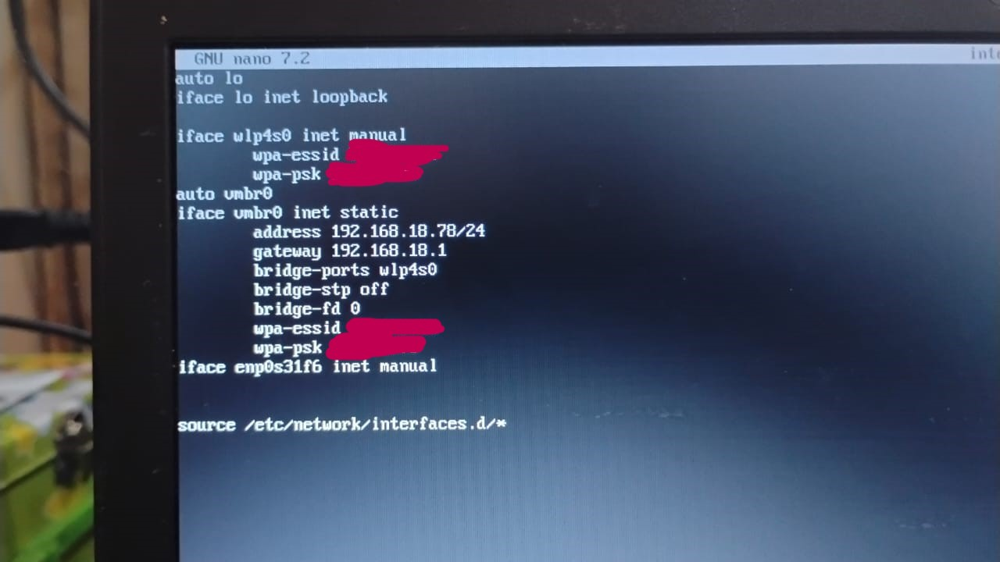
Dan setelah aku reboot dan aku coba ping 1.1.1.1 ternyata masih tidak bisa. Aku coba ping PC-ku juga tidak bisa😔. Setelah sekian lama mencari ternyata menggunakan Wi-Fi tidak disarankan
Avoid using WLAN if possible, it has several technical limitations making it not really suitable as single interface of a hyper-visor like PVE.
Oke…aku memutuskan untuk berhenti di sini karena aku tidak punya kabel LAN.